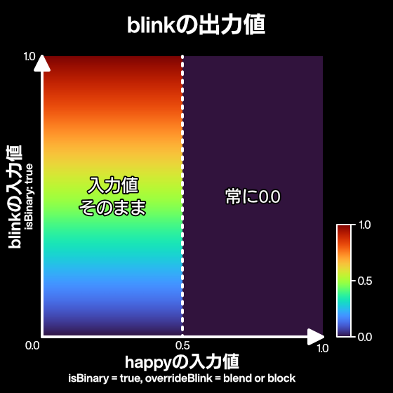

VRMC_vrm.expressions
本文書では、 VRMC_vrm 拡張のうち expressions フィールドについての仕様を示します。
Expression は、
- MorphTarget
- MaterialColor
- TextureTransform
のグループに対して意味を指定する機能です。
例えば、
口をへの字にする MorphTargetと目を閉じる MorphTargetの組み合わせをsadにするなど
Table of Contents generated with DocToc
- Expressionの仕様
- Expression の制御
- Preset Expressions
- 感情
- リップシンク プロシージャル
- 瞬き プロシージャル
- 視線 プロシージャル
- その他
- Custom Expressions
- プロシージャルのオーバーライド
- オーバーライドとisBinaryの相互作用について
- MorphTargetBind
- MaterialColorBind
- TextureTransformBind
- Expression 更新のアルゴリズム
- MorphTarget
- MaterialColor
- TextureTransform
Expressionの仕様
JSON Schema
{
"extensionsUsed": [
"VRMC_vrm"
],
"extensions": {
"VRMC_vrm": {
// VRM extension
"specVersion": "1.0",
"humanoid": {},
"meta": {},
"firstPerson": {},
/* ここから */
"expressions": {
"preset": {
"aa": { /* expression object */ },
"angry": { /* expression object */ },
"blink": {
"isBinary": false,
"morphTargetBinds": [
{
"index": 1,
"node": 2,
"weight": 1
},
{
"index": 2,
"node": 2,
"weight": 1
}
],
"overrideBlink": "none",
"overrideLookAt": "none",
"overrideMouth": "none"
},
"blinkLeft": { /* expression object */ },
"blinkRight": { /* expression object */ },
"ee": { /* expression object */ },
"happy": { /* expression object */ },
"ih": { /* expression object */ },
"lookDown": { /* expression object */ },
"lookLeft": { /* expression object */ },
"lookRight": { /* expression object */ },
"lookUp": { /* expression object */ },
"neutral": { /* expression object */ },
"oh": { /* expression object */ },
"ou": { /* expression object */ },
"relaxed": { /* expression object */ },
"sad": { /* expression object */ },
"surprised": { /* expression object */ }
}
"custom": {
"custom_name_1": { /* expression object */ },
"custom_name_2": { /* expression object */ },
},
},
"lookAt": {},
},
/* ここまで */
"VRMC_springBone": {},
"VRMC_node_constraint": {}
},
// glTF-2.0
"materials": [
"extensions": {
"VMRC_materials_mtoon": {}
}
],
}
expression object
VRMC_vrm.expressions.expression
| 名前 | 備考 |
|---|---|
| isBinary | 0.5より大きい値は1.0, それ以下は0.0になります。 |
| morphTargetBinds | MorphTargetBind(後述) のリスト |
| materialColorBinds | MaterialValueBind(後述) のリスト |
| textureTransformBinds | TextureTransformBind(後述) のリスト |
| overrideMouth | このExpressionのWeightが0でないときに、リップシンク(後述) のウェイトを操作します。 |
| overrideBlink | このExpressionのWeightが0でないときに、瞬き(後述) のウェイトを操作します。 |
| overrideLookAt | このExpressionのWeightが0でないときに、視線(後述) のウェイトを操作します。 |
Expression の制御
各Expressionが用いられる際に、その表情の強さを表す「Value」の状態を持つことを想定します。 Valueは [0-1] の範囲の値を持つ数値です。 VRMの実装は、アプリケーションがこの範囲から外れた値を与えた場合は、値をクランプしてください。
Preset Expressions
以下は、プリセット表情の一覧です。
これらの表情の定義は expressions.preset 内に格納されます。
すべてのプリセット表情はオプショナルです。
感情
| 名前 | 備考 |
|---|---|
| happy | 喜。 joy から変更 |
| angry | 怒 |
| sad | 哀。 sorrow から変更 |
| relaxed | 楽。 fun から変更 |
| surprised | 驚。 1.0で新規追加 |
特に具体的な顔の変形について仕様を規定していません。
リップシンク プロシージャル
プロシージャル: システムから自動的に生成されうる値です。
マイク入力を解析したり、テキストから生成するなど
| 名前 | 備考 |
|---|---|
| aa | あ |
| ih | い |
| ou | う |
| ee | え |
| oh | お |
瞬き プロシージャル
プロシージャル: システムから自動的に生成されうる値です。
ランダムで瞬きさせるなど
| 名前 | 備考 |
|---|---|
| blink | 両方の瞼を閉じる |
| blinkLeft | 左瞼を閉じる |
| blinkRight | 右瞼を閉じる |
視線 プロシージャル
プロシージャル: システムから自動的に生成されうる値です。
VRMの LookAt により注視点に対応した値が随時生成されます(LookAt の Expressionタイプを参照してください)
| 名前 | 備考 |
|---|---|
| lookUp | ボーンではなくExpressionで視線が動くモデル向け。視線制御を参照してください。 |
| lookDown | ボーンではなくExpressionで視線が動くモデル向け。視線制御を参照してください。 |
| lookLeft | ボーンではなくExpressionで視線が動くモデル向け。視線制御を参照してください。 |
| lookRight | ボーンではなくExpressionで視線が動くモデル向け。視線制御を参照してください。 |
その他
| 名前 | 備考 |
|---|---|
| neutral | 後方互換性のために残しています。 |
Custom Expressions
上で挙げたPreset Expressionsの他に、ユーザが独自に表情を定義できます。
Custom Expressionsは expressions.custom 内に格納されます。
プリセット名と同じ名前の Custom Expressions は許容されません。
プロシージャルのオーバーライド
リップシンク、瞬き、視線 はプロシージャルと分類します。 プロシージャルは、システムにより自動で生成されることを想定します。 そのため、 これらの Expression が他の Expression と同時に有効になってしまい、 メッシュが破綻してしまう可能性があります。
例えば、
- 口が開く
happyと同時にaaが適用される => 口が開きすぎて変になる - 目を閉じる
sadと同時にblinkが適用される => 目が2回閉じて瞼が頬を貫通してしまう blinkと同時にlookRightが適用される => 目が瞼を貫通してしまう
などです。 これらを防御するために、 プロシージャルではない Expression に対して、同時にプロシージャルな Expression が有効になった場合に、プロシージャルな Expression の値をオーバーライドする機能があります。
happy中はリップシンクをしないなど
リップシンク、瞬き、視線 に対して overrideMouth, overrideBlink, overrideLookAt を設定できます。
それぞれの override プロパティは、以下のプロシージャル表情に対して作用します:
| 対象 | プロパティ | ExpressionPreset |
|---|---|---|
| リップシンク | overrideMouth |
aa, ih, ou, ee, oh |
| 瞬き | overrideBlink |
blink, blinkLeft, blinkRight |
| 視線 | overrideLookAt |
lookUp, lookDown, lookLeft, lookRight |
カスタム表情に対してこれらの override プロパティが作用するかは、仕様では特に定義しません。 アプリケーション側の需要に応じて適宜設定を行ってください。 例えば、VRMのプリセットに含まれないリップシンクをカスタム表情を用いてアプリケーションごとに利用したい場合に、そのカスタム表情の発現を override プロパティを用いて制御するような使い方が想定されます。
上記の理由で、VRMの実装は、カスタム表情を override の対象に含むことができるようなインタフェースを提供することが推奨されます。
blink に対する overrideBlink のように、同種同士に対する設定は無効として扱います。
設定内容はすべて同じで、効果は下記のとおりです。
| 名前 | 備考 |
|---|---|
| none | 何もしない |
| block | 対象の weight を 0 にする。例えば、 happy に overrideBlink=block が設定されているときに、 happy.weight>0 になると blink,blinkLeft,blinkRight の weight を 0 に override する。 |
| blend | 対象の weight を 減衰させる。例えば、 happy に overrideBlink=blend が設定されているときに、 blink,blinkLeft,blinkRight を happy.weight とブレンドして減衰させる(後述)。 |
blend 詳細
例えば、happy が overrideBlink = blend に設定されている場合、 happy の値が 0 から 1 にフェードするに従い、線形に blink を減衰させます。 0~1 の間の中間値の挙動が block と異なります。
var value = 0;
if (happyWeight > 0 && happy.overrideBlink == "blend") value += happyWeight;
if (angryWeight > 0 && happy.overrideBlink == "blend") value += angryWeight;
if (sadWeight > 0 && happy.overrideBlink == "blend") value += sadWeight;
if (relaxedWeight > 0 && happy.overrideBlink == "blend") value += relaxedWeight;
if (surprisedWeight > 0 && happy.overrideBlink == "blend") value += surprisedWeight;
var factor = 1.0 - saturate(value);
SetBlinkWeight(blinkWeight * factor);
オーバーライドとisBinaryの相互作用について
isBinaryが指定されている表情が他の表情にオーバーライドの影響を与える場合、出力値である二値化された値をもって他の表情に影響を与えなければいけません（MUST）。
これは、オーバーライドの影響を与える表情がキャラクター上に見た目として発現していないにも関わらず、他の表情がオーバーライドによって抑制されることを防ぐための仕様です。 例えば、表情
happyのisBinaryがtrueで、かつoverrideBlinkにblockもしくはblendが指定されている場合、happyの値が 0.5 以上のとき、blinkは完全に抑制されます。逆に、happyの値が 0.5 未満のとき、blinkはhappyの値に関係なく評価されます。
isBinaryが指定されている表情が他の表情からオーバーライドの影響を受ける場合、受けている影響が0.0より大きければ、完全に抑制されなければいけません（MUST）。
これは、オーバーライドの影響を受ける
isBinaryがtrueの表情が0もしくは1以外の値で発現することを防ぐための仕様です。 例えば、表情happyのoverrideBlinkがblockもしくはblendで、表情blinkのisBinaryがtrueの場合、happyが少しでもオーバーライドの影響を与えているならば、blinkは完全に抑制されます。
MorphTargetBind
extensions.VRMC_vrm.expressions[*].morphTargetBinds[*]
Expression と MorphTarget を結びつけます。
| 名前 | 備考 |
|---|---|
| node | 対象node(meshを持っている)のindex |
| index | 対象morphのindex(すべてのprimitiveが同じmorphTargetを持つ想定です) |
| weight | 適用したときのmorph値 [0-1]。0.X では [0-100] |
MaterialColorBind
extensions.VRMC_vrm.expressions[*].materialColorBinds[*]
Expression と Material の色の変化を結びつけます。
| 名前 | 備考 |
|---|---|
| material | 対象のmaterialのindex |
| type | materialの変更対象項目(color, uvScale, uvOffset) |
| targetValue | 適用したときのmaterial値(float4) |
extensions.VRMC_vrm.expressions[*].materialColorBinds[*].type
それぞれ、以下のパラメータに対応します:
| Name | pbrMetallicRoughness |
KHR_materials_unlit |
VRMC_materials_mtoon |
|---|---|---|---|
| color | pbrMetallicRoughness.baseColorFactor |
pbrMetallicRoughness.baseColorFactor |
pbrMetallicRoughness.baseColorFactor |
| emissionColor | emissiveFactor |
未使用 | emissiveFactor |
| shadeColor | 未使用 | 未使用 | extensions.VRMC_materials_mtoon.shadeColorFactor |
| matcapColor | 未使用 | 未使用 | extensions.VRMC_materials_mtoon.matcapFactor |
| rimColor | 未使用 | 未使用 | extensions.VRMC_materials_mtoon.parametricRimColorFactor |
| outlineColor | 未使用 | 未使用 | extensions.VRMC_materials_mtoon.outlineColorFactor |
targetValue はfloat4で格納されますが、宛先のパラメータに4つ目の成分が存在しない場合、4つ目の値は無視されます。
TextureTransformBind
extensions.VRMC_vrm.expressions[*].textureTransformBinds[*]
Expression と 対象 Material のテクスチャーの scale, offset の変化を結びつけます。 対象マテリアルで使われるテクスチャのうち、UVアクセスするテクスチャすべてが同じ値を使用することとします。
UVアクセスしないテクスチャは、MToon の matcap です。
| 名前 | 備考 |
|---|---|
| material | 対象のmaterialのindex |
| scale | 適用したときのscale値(float2, default=[1, 1]) |
| offset | 適用したときのoffset値(float2) |
Expression 更新のアルゴリズム
MorphTarget
- すべての MorphTarget が0の状態にする
- Expression の値(Weight)を積算する
void AccumulateValue(Expression expression, float value) - 積算された値を適用する
MaterialColor
- すべての MaterialColor を初期状態にする(0ではなく)
- Expression の値(Weight)を積算する
void AccumulateValue(Exoressuib expression, float value) - 積算された値を適用する
Base + (A.Target - Base) * A.Weight + (B.Target - Base) * B.Weight - MaterialColor は初期値が 0 とは限らないので、初期値との差分を積算します。
TextureTransform
- すべての MaterialColor を初期状態にする(0ではなく)
- Expression の値(Weight)を積算する
void AccumulateValue(Exoressuib expression, float value) - 積算された値を適用する
TODO: 適用について、具体的なアルゴリズムを検討中です